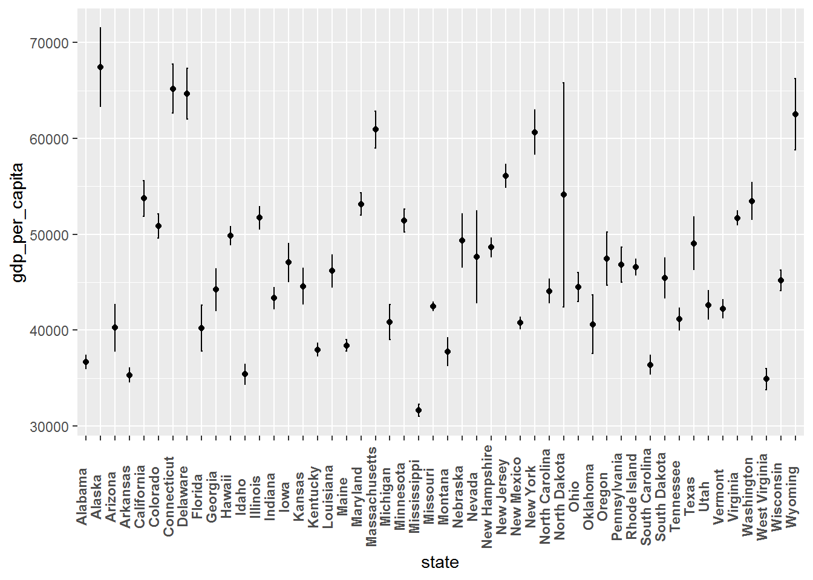
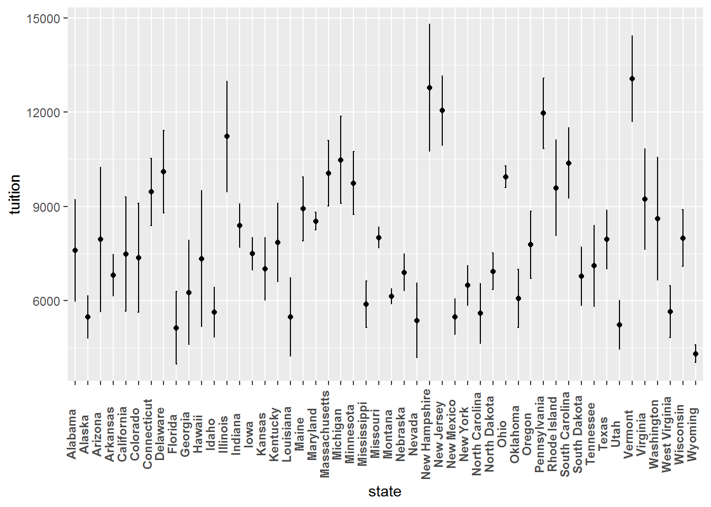
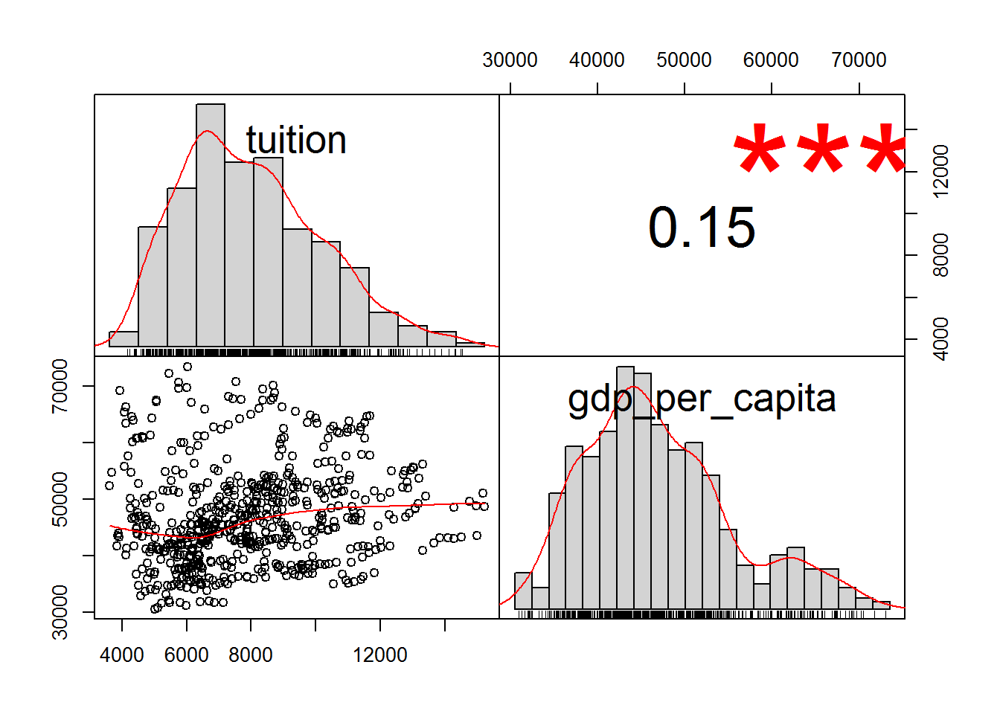
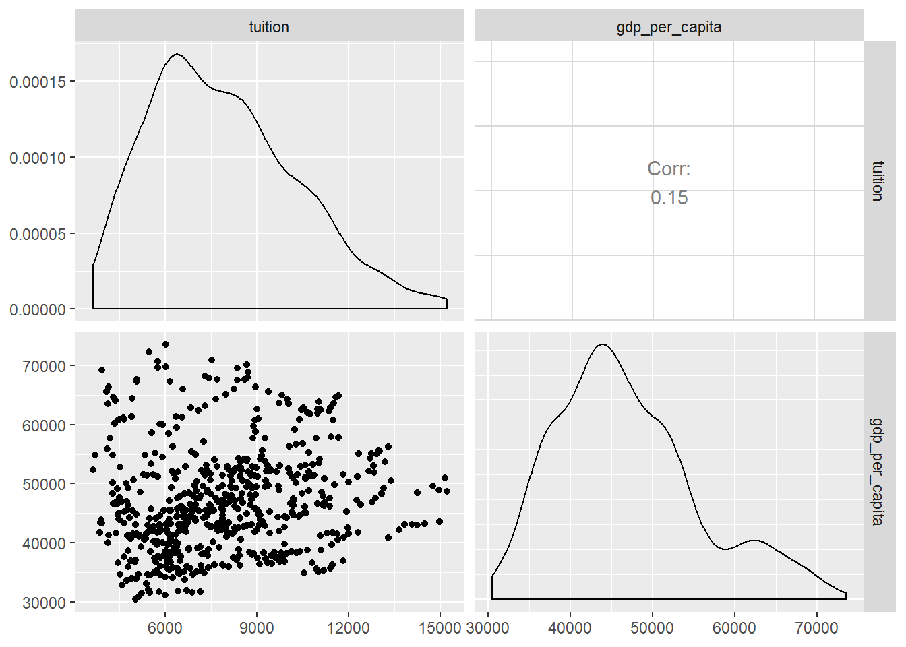
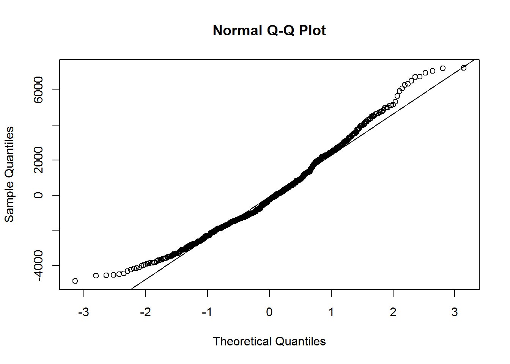

Tuition costs and gdp per capita: A linear regression analysis
This post will explore with R one of the simplest approaches to predict a response of a quantitative nature. This approach is called Linear Regression.
I will use a simple Linear Regression to study whether there is any relationship between the gross domestic product (gdp) per capita of each state in the USA and its tuition costs. Therefore, our predictor will be the gdp per capita per state and our response will be the tuition costs per state.
Our initial step is to load the packages that we need to run this analysis.
# libraries needed
library(here)
library(tidyverse) # load packages related to data cleaning (e.g. dplyr) and data visualization(ggplot2)
library(PerformanceAnalytics) # visualize the correlation
library(GGally) # visualize the correlation
library(readxl) # load excel files
library(broom) # tidy the regression model
library(lares) # to check the regression model
library(sigr) # to check the F-statistic resultNow, we must load two data frames. One with the US tuition costs per state and another one with the gdp per capita per state.
# load tuition costs dataset
tuition_costs <- read_excel(here("us_avg_tuition.xlsx"))
glimpse(tuition_costs)## Observations: 50
## Variables: 13
## $ State <chr> "Alabama", "Alaska", "Arizona", "Arkansas", "Califor...
## $ `2004-05` <dbl> 5682.838, 4328.281, 5138.495, 5772.302, 5285.921, 47...
## $ `2005-06` <dbl> 5840.550, 4632.623, 5415.516, 6082.379, 5527.881, 54...
## $ `2006-07` <dbl> 5753.496, 4918.501, 5481.419, 6231.977, 5334.826, 55...
## $ `2007-08` <dbl> 6008.169, 5069.822, 5681.638, 6414.900, 5672.472, 62...
## $ `2008-09` <dbl> 6475.092, 5075.482, 6058.464, 6416.503, 5897.888, 62...
## $ `2009-10` <dbl> 7188.954, 5454.607, 7263.204, 6627.092, 7258.771, 69...
## $ `2010-11` <dbl> 8071.134, 5759.153, 8839.605, 6900.912, 8193.739, 77...
## $ `2011-12` <dbl> 8451.902, 5762.421, 9966.716, 7028.991, 9436.426, 83...
## $ `2012-13` <dbl> 9098.069, 6026.143, 10133.503, 7286.580, 9360.574, 8...
## $ `2013-14` <dbl> 9358.929, 6012.445, 10296.200, 7408.495, 9274.193, 9...
## $ `2014-15` <dbl> 9496.084, 6148.808, 10413.844, 7606.410, 9186.824, 9...
## $ `2015-16` <dbl> 9751.101, 6571.340, 10646.278, 7867.297, 9269.844, 9...# load gdp per capita dataset
gdp_state_cap <- read_excel(here("gdp_per_state.xlsx"), skip = 4)
glimpse(gdp_state_cap)## Observations: 66
## Variables: 23
## $ Fips <chr> "00000", "01000", "02000", "04000", "05000", "06000", "...
## $ Area <chr> "United States", "Alabama", "Alaska", "Arizona", "Arkan...
## $ `1997` <dbl> 40781, 31398, 61797, 34434, 30435, 41345, 43558, 54740,...
## $ `1998` <dbl> 42045, 32164, 59504, 36311, 30513, 43098, 46692, 56416,...
## $ `1999` <dbl> 43513, 33106, 58609, 38300, 31877, 45541, 49040, 57724,...
## $ `2000` <dbl> 44714, 33284, 57184, 39185, 31834, 48223, 51524, 61355,...
## $ `2001` <dbl> 44689, 33312, 58547, 39170, 31685, 47216, 51113, 61872,...
## $ `2002` <dbl> 45068, 34068, 60101, 39323, 32514, 47880, 50870, 61233,...
## $ `2003` <dbl> 45831, 34855, 59008, 40769, 33678, 49501, 50743, 61419,...
## $ `2004` <dbl> 47010, 36702, 60137, 41063, 34936, 51520, 50083, 65034,...
## $ `2005` <dbl> 48062, 37578, 61125, 43018, 35649, 53320, 51473, 66032,...
## $ `2006` <dbl> 48880, 37735, 64349, 44086, 35803, 54842, 51515, 67458,...
## $ `2007` <dbl> 49126, 37522, 67228, 44168, 35205, 55154, 52094, 70096,...
## $ `2008` <dbl> 48401, 36976, 67527, 41800, 34957, 54454, 51651, 68777,...
## $ `2009` <dbl> 46680, 35376, 72204, 38232, 33837, 51733, 49731, 65574,...
## $ `2010` <dbl> 47289, 35912, 69565, 37943, 34674, 51878, 49260, 64901,...
## $ `2011` <dbl> 47598, 36210, 70618, 38267, 35156, 52105, 49303, 63602,...
## $ `2012` <dbl> 48174, 36440, 73505, 38591, 34982, 52963, 49673, 63433,...
## $ `2013` <dbl> 48534, 36674, 69711, 38352, 35888, 53838, 50523, 62438,...
## $ `2014` <dbl> 49329, 36473, 67179, 38534, 36265, 55571, 52105, 62023,...
## $ `2015` <dbl> 50301, 36818, 65971, 38787, 36295, 57637, 53007, 62796,...
## $ `2016` <dbl> 50660, 37158, 63304, 38940, 36502, 58974, 52863, 62745,...
## $ `2017` <dbl> 51337, 37508, 63610, 39583, 36714, 60359, 54026, 62633,...Let`s now start the wrangling of our data frames. First, we’ll change the tuition costs data frame from a wide to a long format.
tuition_costs_long <- tuition_costs %>%
gather(year, tuition, -State)
glimpse(tuition_costs_long)## Observations: 600
## Variables: 3
## $ State <chr> "Alabama", "Alaska", "Arizona", "Arkansas", "Californi...
## $ year <chr> "2004-05", "2004-05", "2004-05", "2004-05", "2004-05",...
## $ tuition <dbl> 5682.838, 4328.281, 5138.495, 5772.302, 5285.921, 4703...Moving on, we should recode the year variable present in our tuition data frame so that it has the same levels as the year-related variables in our gdp per state data frame.
tuition_tidy <- tuition_costs_long %>%
# recode variable year
mutate(year = case_when(year == "2004-05" ~ "2004",
year == "2005-06" ~ "2005",
year == "2006-07" ~ "2006",
year == "2007-08" ~ "2007",
year == "2008-09" ~ "2008",
year == "2009-10" ~ "2009",
year == "2010-11" ~ "2010",
year == "2011-12" ~ "2011",
year == "2012-13" ~ "2012",
year == "2013-14" ~ "2013",
year == "2014-15" ~ "2014",
year == "2015-16" ~ "2015")) %>%
# change variable State to small case
select_all(str_to_lower)Okay, our tuition data frame looks tidy! Now, let’s take care of our gdp per state data frame. We intend to have the states and years compatible between both data frames, in order to join them in a later step.
gdp_tidy <- gdp_state_cap %>%
# select and rename the column Area, and select years 2004 to 2015
select(state = Area, 10:21) %>%
# include only the 50 states
slice(2:52) %>%
filter(state != "District of Columbia") %>%
#change from wide to long format
gather(year, gdp_per_capita, -state)
glimpse(gdp_tidy)## Observations: 600
## Variables: 3
## $ state <chr> "Alabama", "Alaska", "Arizona", "Arkansas", "Ca...
## $ year <chr> "2004", "2004", "2004", "2004", "2004", "2004",...
## $ gdp_per_capita <dbl> 36702, 60137, 41063, 34936, 51520, 50083, 65034...Now, let’s join both data frames.
tuition_gdp <- tuition_tidy %>%
left_join(gdp_tidy, by = c("state", "year"))
glimpse(tuition_gdp)## Observations: 600
## Variables: 4
## $ state <chr> "Alabama", "Alaska", "Arizona", "Arkansas", "Ca...
## $ year <chr> "2004", "2004", "2004", "2004", "2004", "2004",...
## $ tuition <dbl> 5682.838, 4328.281, 5138.495, 5772.302, 5285.92...
## $ gdp_per_capita <dbl> 36702, 60137, 41063, 34936, 51520, 50083, 65034...For a start, we can make an exploratory data analysis of each state gdp per capita and tuition.
# mean and error bars of the gdp per capita for each state
ggplot(tuition_gdp, aes(x = state, y = gdp_per_capita)) +
stat_summary(fun.y = mean, geom = "point") +
stat_summary(fun.data = mean_sdl, fun.args = list(mult = 1),
geom = "errorbar", width = 0.1) +
theme(axis.text.x = element_text(angle = 90,
vjust = 0, face = "bold"))
# mean and error bars of the tuition costs for each state
ggplot(tuition_gdp, aes(x = state, y = tuition)) +
stat_summary(fun.y = mean, geom = "point") +
stat_summary(fun.data = mean_sdl, fun.args = list(mult = 1),
geom = "errorbar", width = 0.1) +
theme(axis.text.x = element_text(angle = 90,
vjust = 0, face = "bold"))
Now, we can compute the correlation between tuition and gdp per capita. We can also use the functions chart.Correlation() and ggpairs() to visually perceive the association between both variables.
# cor() function to compute correlation
cor(tuition_gdp$tuition, tuition_gdp$gdp_per_capita)## [1] 0.1496632# use chart.Correlation from the Performance Analytics Package
chart.Correlation(tuition_gdp[, c("tuition", "gdp_per_capita")])
# or the ggpairs function from the GGally package
ggpairs(tuition_gdp[, c("tuition", "gdp_per_capita")])
It seems that both variables are correlated, r = .15, p < .001. However, this effect is rather small.
Nonetheless, we can do a simple linear regression to check if there is any linear relationship between the tuition costs and the gdp per capita. We will use the lm() function where first we set the response(Y) as a factor(~) of the predictor variable(X), and finally we assign it to the respective data frame.
# linear function
model <- lm(tuition ~ gdp_per_capita, data = tuition_gdp)After creating our model, we can use the summary() function to get an overview of how fit it really is.
summary(model)##
## Call:
## lm(formula = tuition ~ gdp_per_capita, data = tuition_gdp)
##
## Residuals:
## Min 1Q Median 3Q Max
## -4891 -1664 -249 1515 7251
##
## Coefficients:
## Estimate Std. Error t value Pr(>|t|)
## (Intercept) 5.966e+03 5.312e+02 11.233 < 2e-16 ***
## gdp_per_capita 4.125e-02 1.114e-02 3.702 0.000234 ***
## ---
## Signif. codes: 0 '***' 0.001 '**' 0.01 '*' 0.05 '.' 0.1 ' ' 1
##
## Residual standard error: 2380 on 598 degrees of freedom
## Multiple R-squared: 0.0224, Adjusted R-squared: 0.02076
## F-statistic: 13.7 on 1 and 598 DF, p-value: 0.0002341Looking to our model fit, we can see that the same produces a statistical significant result, Rsquared = .022, F(1, 598) = 13.7, p = .00023. You can use the function wrapFtest() to get a clearer view about this statistic.
wrapFTest(model)## [1] "F Test summary: (R2=0.022, F(1,598)=14, p=0.00023)."This shows that the gdp per capita of each state explains 2.2% of the variability of the tuition costs. Thus, even if our model is statistical significant it only has a very low explanatory power. In sum, it does not show a good fit to predict the tuition costs.
Let’s now take a look to the estimates of the model. We can use the tidy() function from the broom package to check these values.
tidy(model)## term estimate std.error statistic p.value
## 1 (Intercept) 5.966324e+03 531.15634991 11.232708 1.07188e-26
## 2 gdp_per_capita 4.124726e-02 0.01114321 3.701561 2.34075e-04# check the confidence intervals
confint(model, conf.level = 0.95)## 2.5 % 97.5 %
## (Intercept) 4.923166e+03 7.009483e+03
## gdp_per_capita 1.936268e-02 6.313183e-02The estimate of our model is 0.041, 95% confidence interval[0.019, 0.063]. This means that an increase of 1 dollar in gdp per capita per state will increase the tuition costs per state in 0.041 dollars. Meaning , if the gpd per capita increases 1000 dollars the tuition costs will increase 41 dollars. Once more, we can see that our model is not fit to predict the tuition costs.
Regarding the goodness-of-fit, we still must check the Residual Standard Error which is around 2380. We can use the sigma() function to verify it. Again, this value indicates that our model does not show a good fit given that the actual tuition costs will deviate from the regression line, that is, from the expected costs, in 2379.82 dollars.
sigma(model)## [1] 2379.819To test how accurate is our regression model, we should also check it with visual tools. But before that, we can look into some statistics reflected in our model using the augment() function from the broom package.
aug <- augment(model)
head(aug)## tuition gdp_per_capita .fitted .se.fit .resid .hat .sigma
## 1 5682.838 36702 7480.181 149.1891 -1797.343 0.003929942 2380.671
## 2 4328.281 60137 8446.811 176.9765 -4118.529 0.005530228 2375.806
## 3 5138.495 41063 7660.060 116.6842 -2521.565 0.002404010 2379.569
## 4 5772.302 34936 7407.338 164.6227 -1635.037 0.004785104 2380.867
## 5 5285.921 51520 8091.383 110.1505 -2805.461 0.002142322 2379.037
## 6 4703.777 50083 8032.111 103.5728 -3328.333 0.001894102 2377.906
## .cooksd .std.resid
## 1 0.001129667 -0.7567318
## 2 0.008373869 -1.7354110
## 3 0.001355967 -1.0608374
## 4 0.001140235 -0.6886920
## 5 0.001494990 -1.1801195
## 6 0.001859456 -1.3998920In this table, we can see the residuals(.resid), the predicted (.fitted) and estimated values. It is also interesting to check the leverage(.hat) and the cook distance(.cooksd) to check if we have outliers.
Moving on with our analysis, even if the data shown in our model reveals low predictive performance, we can still assess it visually.
ggplot(tuition_gdp, aes(x = gdp_per_capita, y = tuition)) +
geom_point() +
geom_smooth(method = "lm") +
geom_smooth(se = FALSE, color = "red")## `geom_smooth()` using method = 'loess' and formula 'y ~ x' This graph allow us to see the assumption of linearity of our model. In our case the red line is not within the confidence interval of the blue line. Consequently, we can conclude that our model is not linear.
This graph allow us to see the assumption of linearity of our model. In our case the red line is not within the confidence interval of the blue line. Consequently, we can conclude that our model is not linear.
One interesting graph to check the linearity of our model is the mplot_density() function from the lares package. Our graph below shows clearly that the actual values (green color) represent a different density distribution than the predicted values (red color).
mplot_density(tag = aug$tuition,
score = aug$.fitted,
subtitle = "Tuition Model",
model_name = "Linear Model") Regarding the assumption of homoscedasticity, we can use the code below to visualize it.
Regarding the assumption of homoscedasticity, we can use the code below to visualize it.
ggplot(aug, aes(x = .fitted, y = .resid)) +
geom_point() +
geom_smooth(se = FALSE) +
ggtitle("Residuals vs Fitted")## `geom_smooth()` using method = 'loess' and formula 'y ~ x'
Or this one:
ggplot(aug, aes(x = .fitted, y = .resid)) +
geom_pointrange(aes(ymin = 0, ymax = .resid)) +
geom_hline(yintercept = 0, linetype = 3) +
scale_x_continuous("Predictions") +
scale_y_continuous("Residuals") +
ggtitle("Residuals vs. Linear model prediction")
These plots show that the residuals do not have a constant variance along the y-axis. Therefore, our model shows Heteroscedasticity.
Regarding the assumption of normal distribution, we can use the qqnorm() and qqline() functions.
qqnorm(aug$.resid)
qqline(aug$.resid)
In order to have a normally distributed sample, the points should fall directly in the line. We can see by the points in the upper right-hand side and in the bottom left-hand side, that the residuals are not normally-distributed.
Hope you have enjoyed this simple regression analysis. What is important to have in mind is to know which values are relevant to the goodness-of-fit of the model and also to plot the model in order to check the assumptions of the linear regression. Thank you and happy R coding!